Recitales de Linkin Park
Hybrid Theory European Tour (2001)
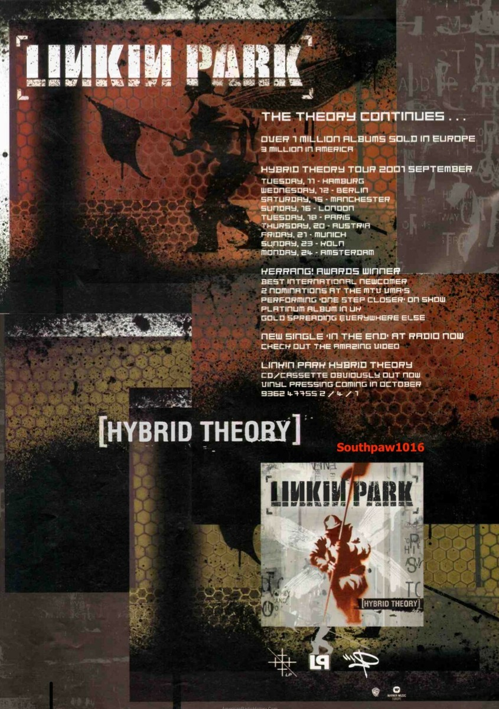
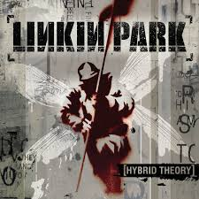
- 2001 fue un año frenético para Linkin Park, ya que la banda ofreció más conciertos que en cualquier otro año de su trayectoria.
Gracias a que Hybrid Theory seguía vendiendo más copias día tras día, en 2001 Linkin Park pasó de ser telonero en giras por clubes a encabezar conciertos en recintos de todo el mundo.
- Entre los conciertos cancelados de 2001 se incluyen dos fechas (posibles, pero no confirmadas) en Portugal en febrero,
donde la banda quizás no pudo obtener los visados necesarios, y algunos conciertos para comenzar la gira europea como cabeza de cartel (incluido Hamburgo , que se canceló debido a los atentados del 11 de septiembre).
Por lo demás, el año fue excelente para la banda y ¡ganaron miles de fans en todo el mundo!
Meteora World Tour (2003-2004)
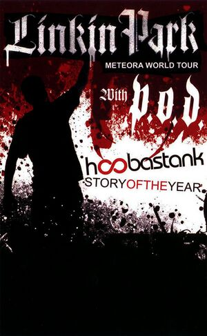
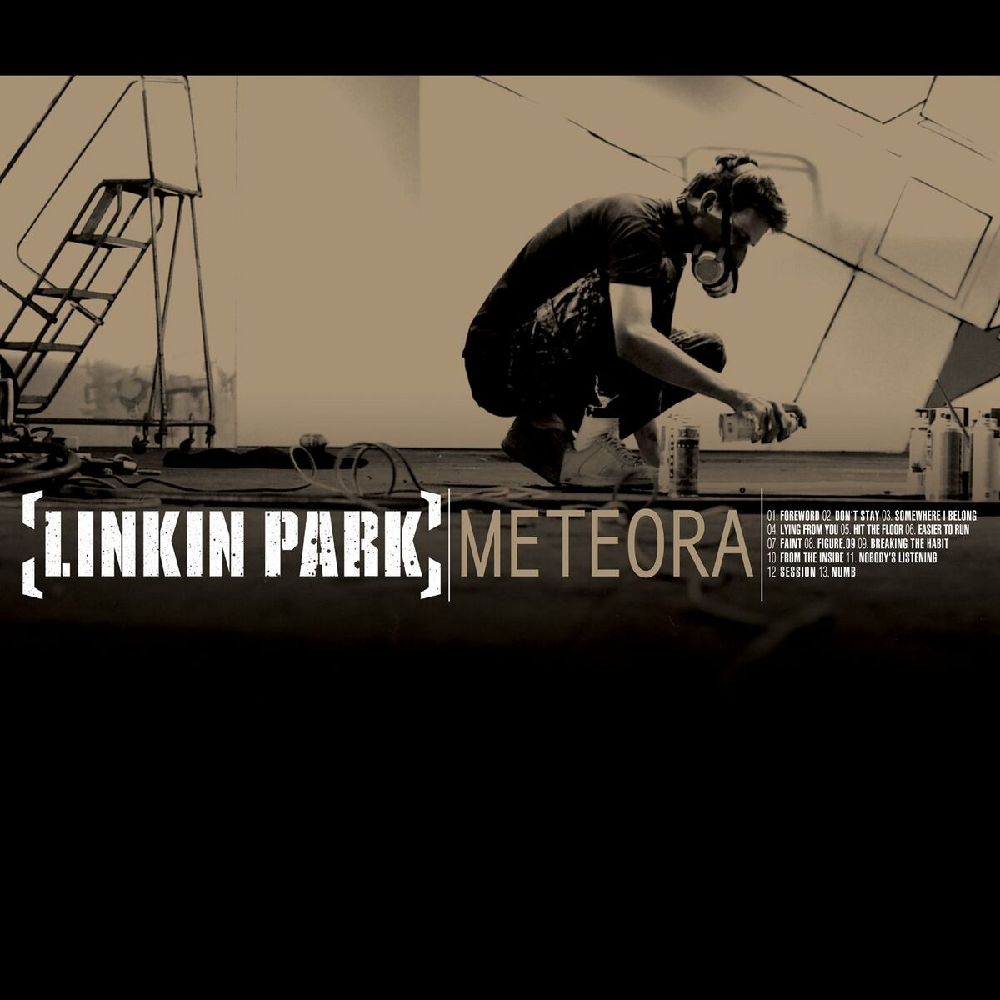
- La banda promocionó el álbum con su Meteora World Tour y varias otras giras de apoyo
- La etapa europea fue cancelada porque Chester tenía fuertes dolores de espalda y abdominales.
- La gira norteamericana Meteora se desarrolló del 16 de enero al 15 de marzo de 2004, convirtiéndose en una de las giras más grandes de Linkin Park en Norteamérica.
El espectáculo constó de treinta y cinco conciertos en Estados Unidos y Canadá.
Muchas fechas agotaron todas las entradas, lo que también la convirtió en una de las giras más exitosas de Linkin Park en Norteamérica.
Minutes to Midnight World Tour (2007-2008)
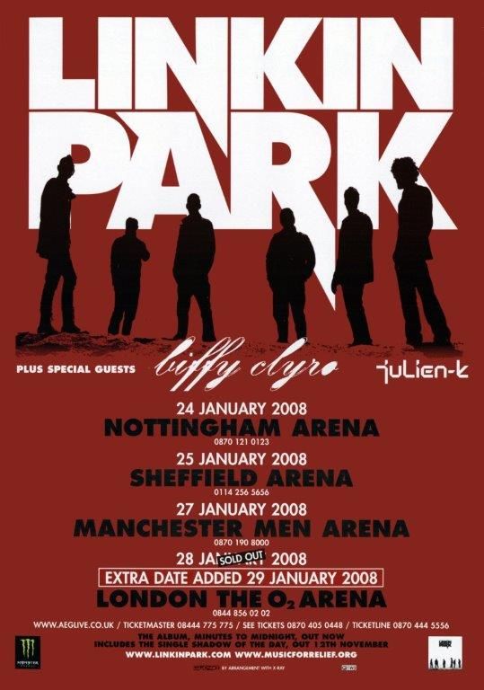

- Se lanzó para promocionar el tercer álbum de estudio de Linkin Park, Minutes to Midnight (2007).
- La gira consta de cinco etapas. La primera etapa incluyó conciertos en Alemania, Reino Unido y Estados Unidos.
Esta etapa, denominada «Promo Tour», comenzó el 28 de abril de 2007 en Berlín, Alemania, y finalizó el 19 de mayo de 2007 en Irvine, California ,
- Después de tres días, la banda se dirigió a Europa y comenzó la gira europea "Minutes To Midnight", que consistió en dieciséis conciertos y una duración de veinticuatro días
- Más tarde, la banda continuó la gira por Australia y Nueva Zelanda , la gira asiática Minutes To Midnight , la gira norteamericana Minutes To Midnight y, de nuevo, la gira europea.
A Thousand Suns World Tour (2010-2011)
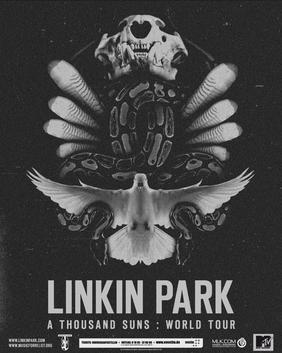
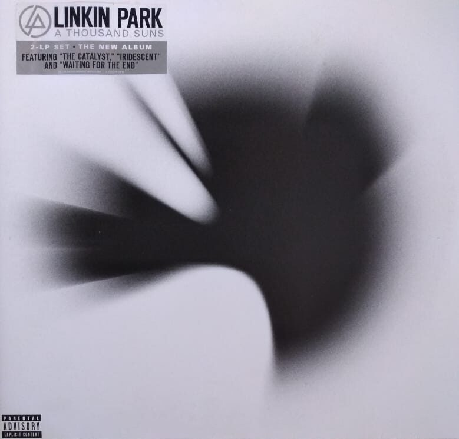
- Linkin Park inició la promoción mundial del álbum con el A Thousand Suns World Tour , que comenzó el 7 de octubre de 2010 en Buenos Aires , Argentina, y finalizó el 25 de septiembre de 2011 en Singapur.
- Fue la primera vez que la banda dio recitales en America Latina.
Living Things World Tour (2012-2013)
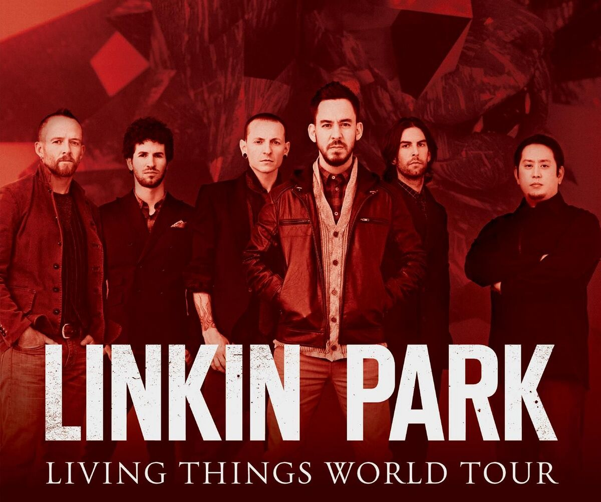
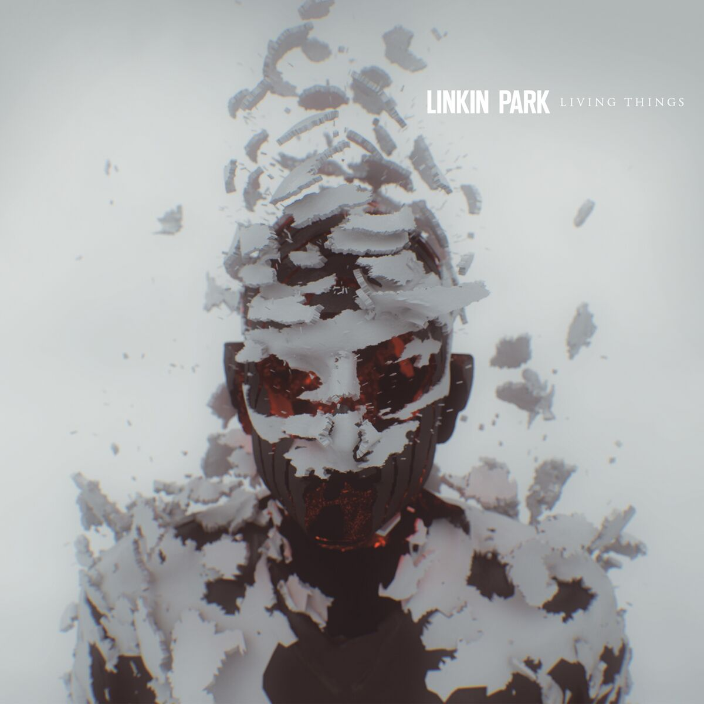
- Se lanzó en apoyo del quinto álbum de estudio de Linkin Park, Living Things (2012).
- Su primera etapa oficial bajo el nombre Living Things South American Tour comenzó el 14 de septiembre de 2012 en la Ciudad de México y terminó el 12 de octubre de 2012 en Porto Alegre.
- La segunda etapa de la gira comenzó un mes después y se denominó "Living Things South African Tour".
La duración de esta segunda etapa fue de 4 días, con solo 2 conciertos.
Comenzó el 7 de noviembre en Ciudad del Cabo. Este concierto marcó el primer concierto de la banda en África.
The Hunting Party Tour (2014-2015)
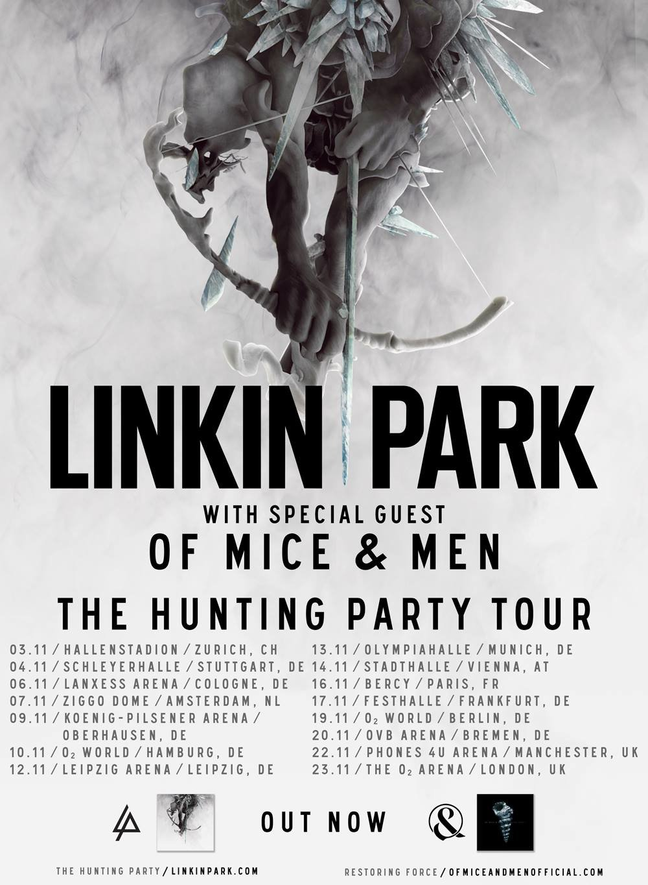
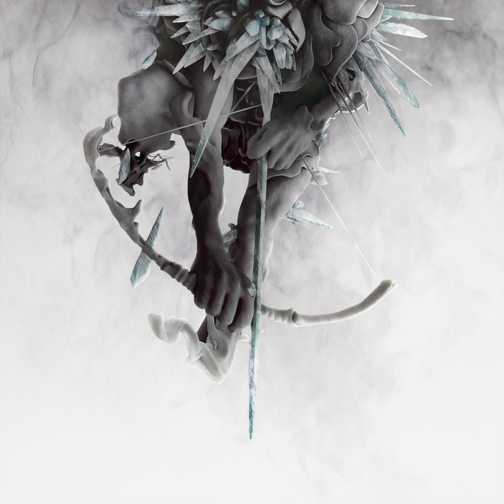
- Se lanzó para apoyar el sexto álbum de estudio de Linkin Park, The Hunting Party (2014).
- Su primera etapa bajo el nombre de European Tour comenzó el 30 de mayo de 2014, en Lisboa, Portugal, y terminó el 14 de junio en Castle Donington, Inglaterra, donde tocaron Hybrid Theory en su totalidad.
- El 15 de enero de 2015, la banda comenzó la gira mundial de The Hunting Party con la primera etapa bajo North American Tour .
Durante un concierto en Indianápolis, Chester Bennington se lesionó la pierna, lo que provocó la cancelación de la gira norteamericana .
- La banda continuó la gira mundial el 9 de mayo, actuando en la primera edición de Rock in Rio en Estados Unidos.
- Fue la última gira de Linkin Park con Chester Bennington como vocalista antes de su fallecimiento en 2017.
One More Light World Tour (2017)
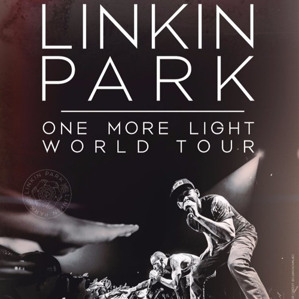
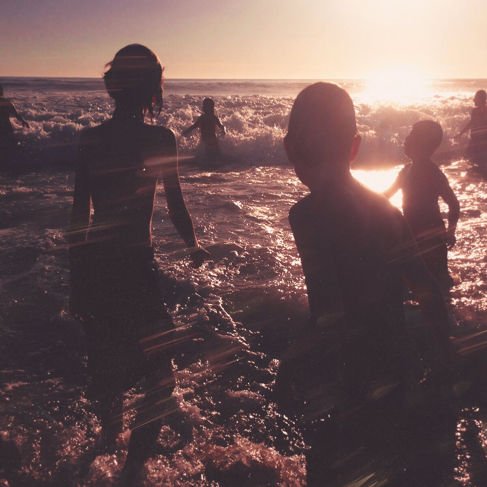
- Fue una gira internacional hecha por la banda en presentación de su séptimo álbum de estudio One More Light, lanzado mundialmente en mayo de 2017.
- A partir de octubre de 2016, la banda anunció varias apariciones en festivales de música en Argentina, Francia y Alemania
- La banda tocó en Buenos Aires el 6 de Mayo de 2017 durante el Maximus Festival en Tecnópolis.
- La gira visitó 18 ciudades de Sudamérica y Europa.
La parte norteamericana de la gira fue cancelada por la banda el 21 de julio de 2017, después de la muerte del vocalista Chester Bennington el día anterior.
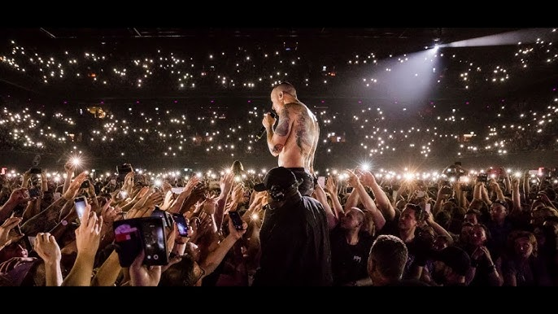
- La actuación final de Chester Bennington con la banda fue el 6 de julio de 2017 en el Barclaycard Arena en Birmingham, Inglaterra. Esta imagen captura un momento emblemático del cantante con el público esa noche.
Linkin Park and Friends: Celebrate Life in Honor of Chester Bennington (2017)
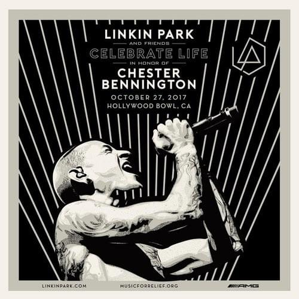
- Fue un concierto tributo de la banda, celebrado el 27 de octubre de 2017 en el Hollywood Bowl para honrar a su líder Chester Bennington.
- Fue la única presentación en vivo de Linkin Park tras la muerte de Bennington hasta la reunión de la banda en 2024, y también su último concierto con el baterista y cofundador de la banda, Rob Bourdon , quien no se reincorporó a la banda después de su pausa.
- El concierto contó con la participación de varios artistas, incluyendo Blink-182 y miembros de System of a Down , Korn , Avenged Sevenfold , Machine Gun Kelly , Sum 41 , Bring Me the Horizon , Civil Twilight , A Day to Remember , Yellowcard y Kiiara.
- El 20 de octubre se anunció que Linkin Park transmitiría el concierto en vivo en su canal de YouTube . Hasta julio de 2025, el concierto había sido visto más de 26 millones de veces.
From Zero World Tour (2024-2026)
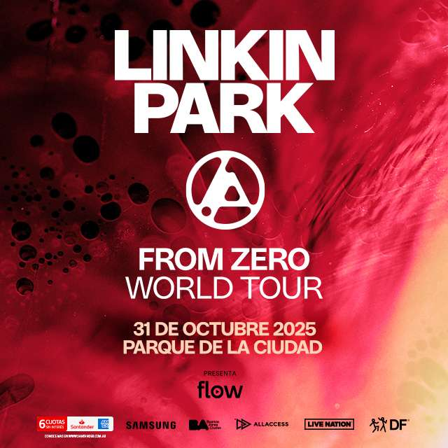
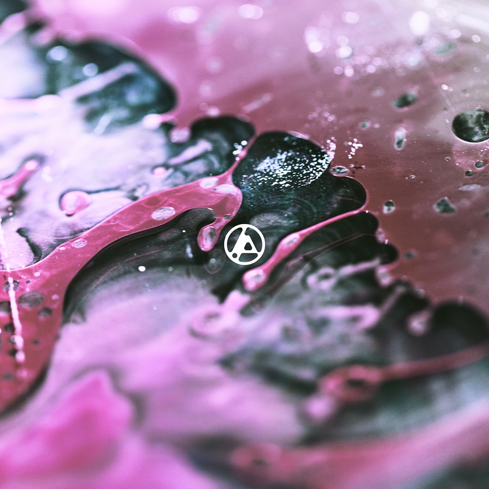
- Es una gira de conciertos de la banda para promocionar su octavo álbum de estudio, From Zero (2024).
- La gira se anunció el 5 de septiembre de 2024, tras el lanzamiento del primer sencillo del álbum, « The Emptiness Machine ».
La gira comenzó el 11 de septiembre de 2024 en Inglewood, California , y está programada para concluir el 30 de junio de 2026 en Zúrich , Suiza .
- Esta gira es la primera de la banda en siete años, y la primera sin el vocalista Chester Bennington , el baterista y cofundador Rob Bourdon , y el guitarrista principal Brad Delson.
Este último sigue siendo miembro de la banda, pero se ha retirado de las giras.
- La banda volvió a tocar en Argentina el 31 de Octubre de 2025 en el Parque de la Ciudad.